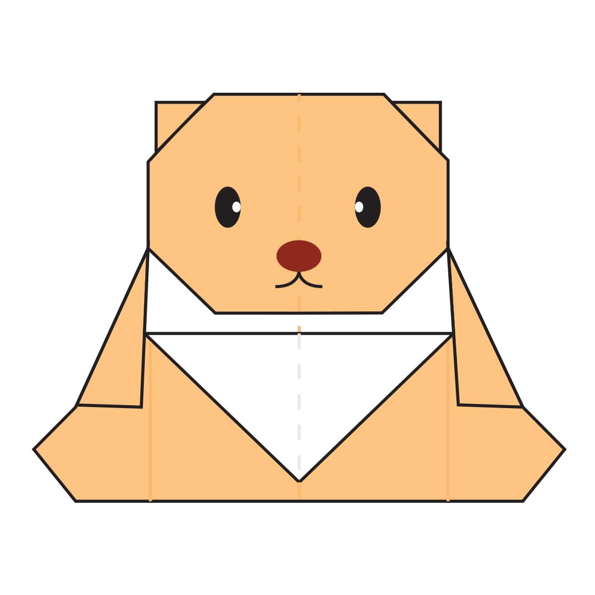

👇Steps to make a teddy bear (Steps 1-16)👇
- Fold and unfold the paper in half both ways.
- Fold both sides in to the centre along the dotted lines.
- Fold both sides in to the centre along the dotted lines.
- Open up the paper completely.
- Fold the paper over along the dotted line.
- Fold the paper back out over to the left.
- Fold the right side of the paper over along the dotted line and then fold it back out like on the other side.
- Make a small fold on each side along the dotted lines.
- Open up the paper along the dotted lines. Lift it up and push it flat. Look at the next diagram to see the final position of this fold.
- Fold the top of the top layer of paper down along the dotted line.
- Fold both sides in along the dotted lines.
- Fold the top of the paper down along the dotted line
- Fold the paper underneath along both the dotted lines.
- Make two Pleat Folds to form the ears.
- Fold the paper in half a little bit to make the model a bit 3D.
- The complete teddy bear